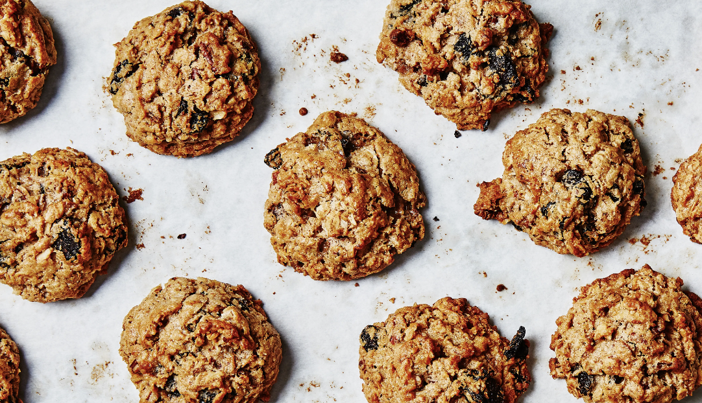
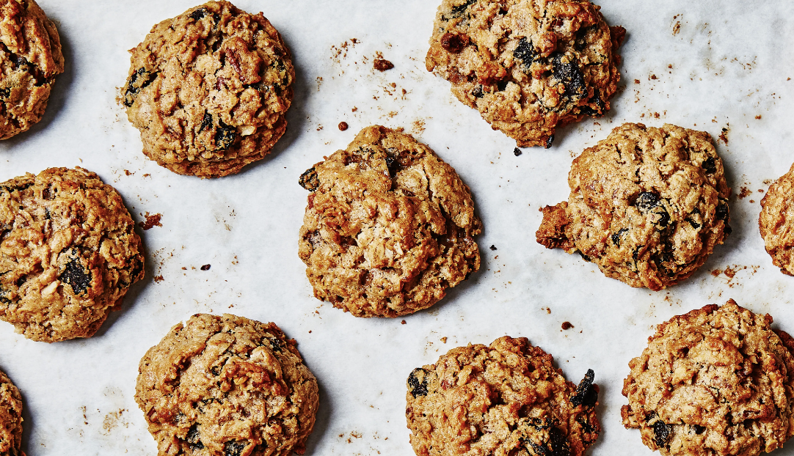

Oatmeal Raisin
An oatmeal raisin cookie is a type of drop cookie made from an oatmeal-based dough with raisins. Its
ingredients also typically include flour, sugar, eggs, salt, and spices.
A descendant of the Scottish oatcake, the oatmeal raisin cookie has become one of the most popular
cookies in the United States. When the cookies were becoming prominent in the United States in the
early 1900s, they came to be known as a health food because of the fiber and vitamins from the
oatmeal and raisins.
Nonetheless, the nutritional value of an oatmeal raisin cookie is essentially the same as a
chocolate chip cookie in sugar and calorie content. Depending on how many raisins or oats are added,
the fat and fiber content may not be much different either.
Source: Wikipedia
 
